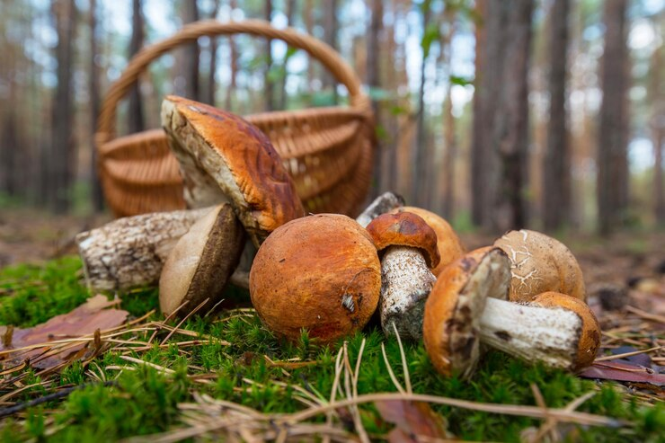

Карпатські гриби
Карпатські гриби по праву вважаються однією з «візитних карток» регіону. Королі-боровики, завзято-яскраві лисички, маслюки, що поблискують липкою вологою, аристократичні трюфелі та інші представники грибного братства розбурхують уяву туристів і змушують завмирати серце в передчутті чергової здобичі. Згідно з народними традиціями, гриби в Карпатах зведені у своєрідний культ. Їх називають годувальниками, приписують магічні властивості, згадують у казках і піснях і, звісно ж, уміють збирати та готувати. Хоч би які сучасні та різнопланові розваги пропонували гостям Карпати, гриби завжди мають незмінну популярність і цілком можуть конкурувати з екстремальними видами активного відпочинку, адже викликають не менший підйом адреналіну та бурю позитивних емоцій.

Види грибів у Карпатах
Тут росте понад 200 різновидів грибів — красивих, корисних та екологічних. Лісові гриби є цінним джерелом білка, а також вітамінів (A, B1, B12, C, D) і мікроелементів (калій, кальцій, мідь, цинк, сірка, марганець, йод, фосфор тощо). А які страви пропонує гуцульська кухня дорогим гостям!Гриби, тушковані в сметанному соусі з бринзою, солоні та мариновані варіації, картопляно-грибні деруни, запашний банош, вареники з капустяно-грибною начинкою та інші смаколики має скуштувати кожен турист.
Їстівні гриби Карпат
Відповідно до класифікації всі їстівні гриби Карпат поділяють на 4 групи, ґрунтуючись на їхній поживності та смакових характеристиках:
- 1 група — елітні, з ніжною м'якотою і вишуканим смаком. Вміст білка підвищений, також у складі є достатньо вітамінів і мінералів. Це грузді, боровики (білі гриби), делікатесні рижики, трюфелі.
- 2 група — не поступаються за корисністю, проте мають більш жорстку м'якоту. Сюди належать: маслюки, печериці, підосичники, підберезники.
- 3 група — включає лисички, опеньки осінні та літні, моховики, сморчки, сироїжки. Відмінний продукт, проте трохи поступається за смаковими якостями.
- 4 група — всі інші їстівні види грибів.
Варто уточнити, що існує також група «умовно їстівні гриби» — джерело постійної спокуси для любителів експериментів і гострих відчуттів. Ці гриби не становлять небезпеки тільки в разі дотримання правильної технології приготування, тому не терплять дилетантства.
Грибний тур
Триденний тур для любителів «тихого полювання» в Карпатах. Вас чекає збір грибів та ягід, проживання у затишних садибах, харчування, трансфер та супровід гіда.
Програма відпочинку для туристів
- Збір грибів у гірських лісах
- Прогулянки та екскурсії
- Смачне харчування та дегустації
- Проживання у садибах або готелях
- Трансфер і супровід